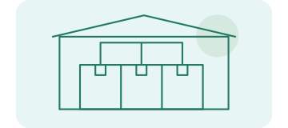

Details in too many places.
Prices, product notes, and supplier details can be spread across notebooks, messages, and memory.
Finding the right detail takes longer.
Stromule helps shopkeepers, retailers, wholesalers, small manufacturers, service providers and street vendors bring their business information and everyday operations into a more organised digital environment.
From products and orders to essential business records, build better habits around the work you already do—and prepare your business for the next stage of growth.
Built around real businesses. Designed for everyday usefulness.
In development · The workspace shown is an illustration.Product details, easier to find. A name, a category, and a note give the next conversation a clearer starting point.
One notebook becomes three. Prices live in different places. An order arrives while a customer is waiting. A supplier's message gets buried.
These ways of working often grow out of a busy day. The challenge is not a lack of experience or effort. It is keeping the right information within reach.
Prices, product notes, and supplier details can be spread across notebooks, messages, and memory.
What is available may change before the record does. Someone has to check again.
Orders and requests arrive in different ways. Following each one through can take extra effort.
Experience keeps a business moving. But details held only in someone's memory are harder to share.
A business may have exactly what a customer needs, without useful information available online.
More products, people, and orders can make familiar ways of keeping records harder to maintain.
Small businesses do not lack ambition.
Their systems deserve room to grow, too.
A better system does not have to mean a more complicated business. It can start with reliable records, useful routines, and information the right person can find.
Keep important details organised and easier to review.
Make products, orders, and pending work easier to follow.
Make routine work less dependent on remembering everything.
Give future digital services a more accurate starting point.
A Business Operating System is a practical place for the information and day-to-day work behind a business.
Stromule is being developed to help owners create better records and clearer ways of working. The goal is to make technology useful within the work, instead of adding another job to your day.
Illustrative layouts, not shipped product screens. Platform and feature availability will be shared when confirmed.
A shop, a workshop, and a service business work differently. Each still needs useful information and a clear next step. Select a business below to explore its everyday work.
Changing prices, stock checks, and customer questions all rely on clear product information.

Many products, repeat buyers, supplier details, and order follow-ups can create a lot to keep track of.
Specifications, finished products, customer enquiries, and order notes deserve a useful place together.
Repair and maintenance work involves requests, job details, and follow-ups as well as the service itself.
Proximity, local knowledge, and personal relationships are strengths. Business technology should respect them.
More products, people, and orders need more consistent ways of keeping information up to date.
A clearer view of the details behind everyday retail work.
Exploring: Shopkeepers & retailersChoose a product, such as a charging cable, and review its name and description.
These stories show intended uses. Exact features, onboarding, and availability depend on the product as it is released.
Good records become useful through small, consistent actions. Here is how that could fit around work you already do.
Review the products, pending work, and records that need attention. Choose what matters today.
Keep relevant prices, order notes, and requests updated as the business moves.
Use the information you maintain as a starting point for answering the question.
Check what still needs updating and leave a clearer starting point for tomorrow.
An example of organised habits, not an automatic daily briefing or a live dashboard.
Writing something down is the beginning. Keeping it clear, current, and available to the right people is what makes it useful.
Start with a relevant product, service, or business detail.
Give it a clear name and a place alongside related information.
Check it and update it when the real-world details change.
Support daily work, or authorised discovery where available.
Customers look for products, compare options, and ask questions online. A useful local business can still be hard to find when its information is missing or out of date.
The opportunity is to organise what makes your business useful, so you have a stronger foundation for suitable digital channels.
Clear product information can give discovery services a more useful starting point.
Relevant, current information helps customers understand an option.
Organised service descriptions can make a local business easier to understand.
Two products of Kumpali Private Limited. Connected by purpose. Separate by role.
Stromule focuses on business organisation. Pangeabuy is the customer-facing hyper-commerce product, intended for local discovery and commerce with participating merchants.
The business side.
Product details, business records, and everyday operational information.
The customer side.
Discovery and purchase journeys, where the required capabilities are available.
Useful technology does not have to begin with changing everything. Start with one real need and a habit you can maintain.
Choose a recurring challenge with products, orders, records, or requests.
Bring the relevant, accurate details together.
Decide how and when those details get updated.
Add supported workflows and discovery options as they become useful.
Stromule is in development. Registration is not open yet. This site does not collect sign-ups.
A tool is only as useful as the information behind it. Clear records, clear permissions, and honest expectations matter.
Products, prices, and availability still need careful, regular attention from the business.
Connected services should use information according to applicable permissions and product behaviour.
You should understand what a workflow does and which details it uses.
We distinguish the product direction and illustrative examples from confirmed capabilities.
No complicated language.
No promises hidden in the small print.
Stromule is a Business Operating System being developed by Kumpali Private Limited. It is designed to help small businesses organise their important information and everyday work in one practical digital environment.
Shopkeepers, retailers, wholesalers, small manufacturers, service providers, street vendors, hawkers, and growing businesses are part of its intended audience. Exact features and requirements will be shared as the product becomes available.
No. The intended audience includes people working on their own, mobile merchants, and service businesses as well as shops and small teams. Onboarding will depend on the product's actual requirements.
Our aim is to make the everyday work understandable and practical. You should not have to become a software expert just to organise your business. We will share the actual setup process when it is available.
No such promise is being made. The idea is to help you organise information and work more consistently. Stock checks, accurate records, and business decisions still need people. Only confirmed capabilities will be described as available.
Stromule focuses on the merchant's business information and everyday work. Pangeabuy focuses on customer-facing local discovery and commerce. Where an authorised integration is implemented, relevant merchant information may support Pangeabuy discovery.
Do not assume that every record will become a listing. Any public information depends on merchant authorisation, the implemented connection, and applicable product rules. Not every business record is meant for discovery.
Stromule is still in development. Registration, launch timing, and pricing have not been announced. This website does not take payments or register accounts. See the getting-started information for the current status.
We are building with small businesses around the world in mind. Supported countries, languages, and local requirements have not yet been announced. These will be clarified before availability is offered.
Every day, you serve customers, solve problems, and keep things moving.
Useful technology should help organise the work behind that effort.